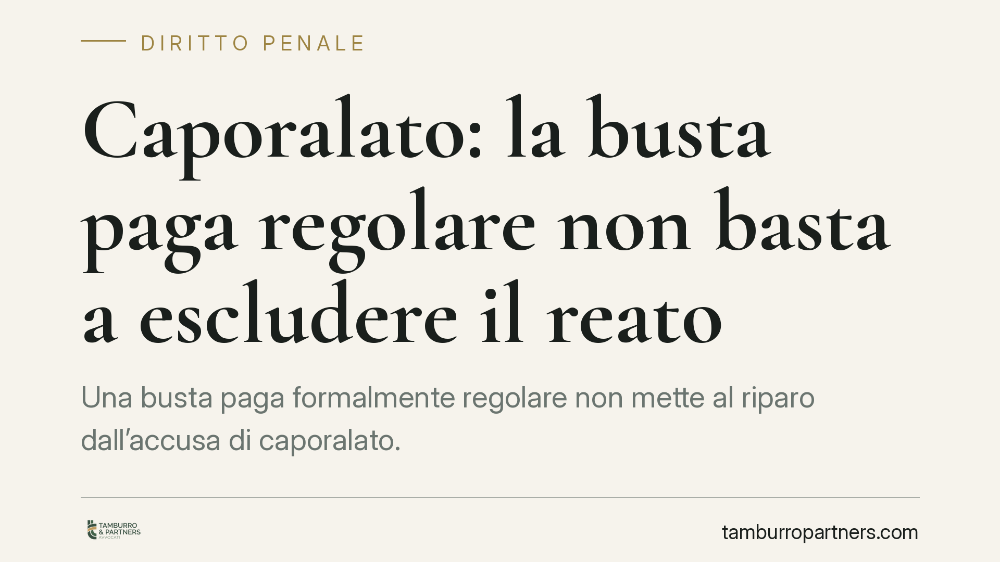

Caporalato: la busta paga regolare non basta a escludere il reato
Una busta paga formalmente regolare non mette al riparo dall'accusa di caporalato. Un recente orientamento della Cassazione chiarisce che la sproporzione retributiva si misura sulle ore realmente lavorate e che gli indici di sfruttamento non sono tassativi: contano la loro convergenza e la durata nel tempo. Un punto decisivo per il comparto agricolo e per chi gestisce manodopera stagionale.

Il principio
La regolarità documentale non coincide con la regolarità sostanziale del rapporto di lavoro. È questo il cuore di un recente orientamento della Corte di Cassazione penale in materia di intermediazione illecita e sfruttamento del lavoro.
La questione è concreta. Un datore può emettere buste paga apparentemente corrette, con retribuzione oraria in linea con i minimi, e ciononostante corrispondere un compenso complessivo sproporzionato rispetto alle ore effettivamente prestate. Se il lavoratore è formalmente retribuito per otto ore ma ne lavora dodici o quattordici, la sproporzione va calcolata sulla prestazione reale, non sul documento.
Il secondo passaggio riguarda gli indici di sfruttamento: non costituiscono un elenco tassativo da spuntare. Non basta un singolo elemento, ma neppure occorrono tutti. Rileva la convergenza di più indicatori protratta nel tempo.
Inquadramento normativo
Il riferimento è l'art. 603-bis del codice penale (intermediazione illecita e sfruttamento del lavoro).
Il comma 1 punisce, tra l'altro, chi utilizza, assume o impiega manodopera sottoponendo i lavoratori a condizioni di sfruttamento e approfittando del loro stato di bisogno. L'approfittamento dello stato di bisogno è un requisito strutturale: senza di esso l'irregolarità del rapporto, anche grave, non si trasforma automaticamente in caporalato. È la soglia che evita l'equazione irregolarità uguale reato.
Il comma 3 individua gli indici di sfruttamento. In sintesi, la norma richiama:
- la reiterata corresponsione di retribuzioni in modo palesemente difforme dai contratti collettivi nazionali o territoriali, o comunque sproporzionate rispetto alla quantità e qualità del lavoro prestato;
- la reiterata violazione della normativa su orario di lavoro, riposi, aspettativa obbligatoria e ferie;
- la violazione delle norme in materia di sicurezza e igiene nei luoghi di lavoro;
- la sottoposizione del lavoratore a condizioni di lavoro, metodi di sorveglianza o situazioni alloggiative degradanti.
La lettura dell'orientamento in esame si colloca su questa cornice: gli indici orientano la valutazione del giudice, ma la prova dello sfruttamento resta frutto di un apprezzamento complessivo.
*Nota di cautela: gli estremi esatti della pronuncia richiamata vanno verificati alla fonte prima di qualsiasi uso processuale. Il principio qui esposto è coerente con l'indirizzo consolidato sull'art. 603-bis c.p.*
Implicazioni pratiche
Per chi gestisce manodopera — in particolare nel settore agricolo, dove il lavoro stagionale e l'intermediazione sono diffusi — cambia il perimetro del rischio penale.
La documentazione in ordine non è di per sé una difesa. Se il quadro reale mostra orari fuori controllo, retribuzioni effettive incongrue rispetto alle ore prestate, alloggi degradanti o condizioni di sorveglianza oppressive, la regolarità cartacea perde peso.
Attenzione anche alla filiera. Nei rapporti di appalto e somministrazione la normativa prevede meccanismi di responsabilità solidale in materia retributiva e contributiva (tra l'altro art. 29 d.lgs. 276/2003 per l'appalto). Chi si avvale di intermediari non si libera automaticamente delle criticità che maturano a valle.
Infine, il fattore tempo: un episodio isolato ha un peso diverso da una prassi reiterata. La durata e la ripetizione degli indici sono elementi centrali nella ricostruzione del fatto.
Cosa fare in concreto
- Rilevate le ore reali. Adottate sistemi di registrazione delle presenze verificabili e confrontate le ore effettive con quelle retribuite in busta paga.
- Allineate retribuzione e CCNL. Verificate la coerenza del compenso corrisposto con i minimi contrattuali applicabili, calcolata sulla prestazione reale.
- Controllate alloggi e trasporti. Dove forniti, assicuratevi che condizioni abitative e logistiche non rientrino tra gli indicatori di degrado.
- Valutate la filiera. È opportuno verificare la regolarità dei soggetti intermediari e la tenuta dei rapporti di appalto e somministrazione lungo tutta la catena.
- Documentate nel tempo. Conservate evidenze di orari, riposi e sicurezza: la continuità della correttezza è essa stessa un elemento difensivo.
In sintesi
Il messaggio è lineare: nel caporalato conta la sostanza del rapporto, non la sua rappresentazione formale. La busta paga in regola è un punto di partenza, non un salvacondotto. In presenza di indicatori convergenti e di approfittamento dello stato di bisogno, la responsabilità penale resta concreta.
Disclaimer
Contributo informativo a cura di Tamburro & Partners Avvocati. Non costituisce parere legale.
Ogni condominio ha una storia a sé.
Se gestisci un'amministrazione e vuoi un confronto su una specifica questione condominiale, scrivi allo studio. Ti rispondiamo entro un giorno lavorativo.